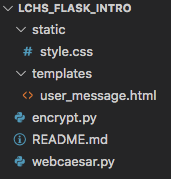

21.10. Project: Web Form (Part 2)¶
In Part 1 of this project, you designed a form to collect a text message and two other inputs from the user.

One possible form style.¶
Today, you will move your HTML/CSS code into a Flask application. The goal is to create a webpage that will encrypt or decrypt the user’s message when they click Run.
21.10.1. Part A: Setup¶
Good news! When you cloned the GitHub repository for the chapter exercises, you also got access to the starter code for this project.
Note
If you didn’t clone the repository, do that now. Return to the exercises and follow the Git instructions in the Setup section.
The starter code is located in a different branch in the repository.
Open your
lchs_flask_intofolder in Visual Studio Code.Save and commit any work you have from the exercises.
In the terminal, checkout the project branch:
git checkout caesar-project
The file tree will change, but don’t worry! All your old work is saved in your local repository. It’s just in a different branch. The new file structure looks like this:
The
staticandtemplatesdirectories are ready for your HTML and CSS files.¶
21.10.1.1. Pull in Your Part 1 Work¶
You have a couple of different ways to move your form from Part 1 into this Flask project.
On your device, locate the
style.cssfile you created for Part 1.To transfer the CSS code to your new project EITHER:
Drag-and-drop your old file into the
staticfolder. A dialog box might pop up and ask if you really want to do this. Agree.OR
Copy your old code and paste it into the empty
style.cssfile. You now have two copies of the same code on your machine. This isn’t really DRY, but we won’t judge (much).
Follow a similar process to move your old HTML code into the
user_messagefile.Once the two files are in place, launch the
webcaesar.pyprogram. Open your browser and navigate to the form page.If you used a different name for your
.htmlfile, update therender_template()function in the Python code.Remember to use
url_forin your template to link it to the stylesheet.
When your form renders properly, save and commit your setup.
21.10.2. Part B: Update the Form Page¶
Update the
actionandmethodattributes in the<form>tag. When you submit the form, send the data to the/user_messageroute.Add a section underneath the form to display the message the user submits and the coded result. Use placeholders where you want the text to appear on the page.
In
webcaesar.py, add variables for the plain and coded message. Pass their values to the template usingrender_template().Refresh the page to make sure the data moves correctly from your Python code to the template.
{kind=link}
21.10.2.1. Collect and Display Message¶
Return to webcaesar.py.
Update the
@app.route('/user_message')handler to accept bothGETandPOSTrequests.Using the hex code exercise as an example, add a conditional to check the type of request made when the page loads.
If
POST:Collect data from all 3 of the input fields on the form. This will include the user’s message, the number of letters to shift, and whether to encrypt or decrypt the text.
The
Shift byvalue is a number, but Flask pulls the data in as a string. You need to convert the value toint.For now, just send the user’s message back to the form page. It should appear below the form after submission.
For a
GETrequest, assign the empty string to the placeholder variables, then render the template.Use the form to submit a few test messages. Make sure they appear below the form.
Remember to save and commit your work before starting the next section.
21.10.3. Part C: Change the Message¶
In Assignment #2, you wrote a Python program that takes
a string and converts it into a coded message. Now it’s time to reuse that
code! At the time, you were still using repl.it or Trinket to store your
projects. Login to your account and locate your Coded Messages program.
Copy the
alphabet_position()function and paste it into theencrypt.pyfile in Visual Studio Code.Do the same thing for the
shift_character(),build_code_dict(), andencrypt_with_shift()functions.If your functions depend on any Python modules (like
string), import those intoencrypt.py.Finally, return to
webcaesar.py. Add animportstatement for theencrypt_with_shift()function.2
from encrypt import encrypt_with_shift
Note
If your teacher didn’t ask you to complete Assignment 2, never fear. You can find a scaled down version of the functions on GitHub.
Paste the posted code into encrypt.py.
21.10.3.1. Encrypt the Message¶
After all of the request.form statements execute, you should have the
user’s message and the amount to shift each letter.
Call the
encrypt_with_shift()function. Send the message text and shift value as arguments.The function returns a coded message. Assign this to a variable.
Send the original text and the new message to the template.
Save your work, then refresh the page in your browser.
Test your code by submitting a simple message like
abcand a shift value of1. Ifbcdappears on the page, congratulations!Test your code with more complicated messages with MixED CasE, digits, symbols, etc.
21.10.3.2. Decrypt Message¶
If the user submits the form with the
Decryptradio button selected, call theencrypt_with_shift()function like before. However, send in the negative of the shift value.Test your code again to make sure it correctly encrypts and decrypts messages using the Caesar Cipher.
Message |
Action |
Shift |
New Message |
|---|---|---|---|
Hello, World. |
Encrypt |
5 |
Mjqqt, Btwqi. |
Agvnf MJXFN! |
Decrypt |
21 |
Flask ROCKS! |
21.10.4. Part D: Server-Side Validation¶
In Part 1 of this project, you used the max,
min, required, and checked attributes to validate the form inputs.
However, client-side checks are surprisingly easy to bypass, or they may not be
specific enough to catch every error. It’s always a good idea to combine client
and server-side validation.
Add code to webcaesar.py to catch the following errors:
The message contains no letters or is blank.
The shift value is less than 1 or greater than 25.
The message exceeds a maximum number of characters or words.
For any error, your program should generate a message that tells the user exactly what went wrong. Add a placeholder to the HTML page to display the message inside the form. If no problems occur, that space should remain empty.
21.10.5. Bonus Mission¶
The Caesar Cipher is pretty easy to decode. All we need to do is take the message and apply different shift values until we see a clear result.
To bump up the security of the cipher, we can add a keyword to the alphabet
string. Instead of using "abcdef...", we move selected letters to the start
of the string. This makes it harder to decode a captured message because the
letter order isn’t as predictable.
{kind=link}
Add a keyword input field to the form. This word can have no repeated
letters, so you will need some server-side validation. Next, add a new function
in encrypt.py to build the keyword string. Use that result instead of the
plain alphabet to code a message.